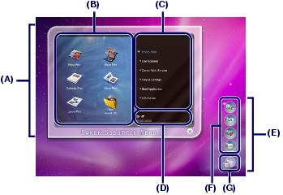
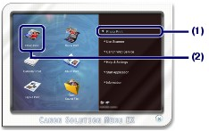
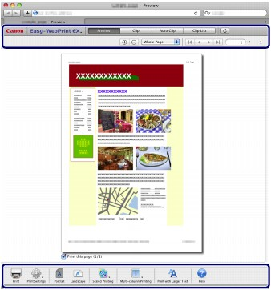

This section describes Solution Menu EX, which is used to start the software applications supplied with the machine. The information on Easy-WebPrint EX, a software application for printing web pages, is also included.
 Solution Menu EX
Solution Menu EXSolution Menu EX is a software application that provides quick access to other software applications supplied with the machine, manuals, and online product information.
 Note Note
|
Menus are displayed in Category Menu Area of Solution Menu EX Main Screen. Click a menu in Category Menu Area to display icons for functions available in that menu, in Function Icon Area of Main Screen.
The number and types of icons or menus displayed in Main Screen may vary depending on your machine and region.
* The screen below is for Mac OS X v.10.6.x.

(A) Main Screen
(B) Function Icon Area
(C) Category Menu Area
(D) Registered Model Name Area
(E) Desktop Accessory
(F) Shortcut menu to which you can add the icons of frequently used functions
(G) Accessory Icon that lets you display Main Screen, show or hide Shortcut menu, etc.
Photo Print
Print photos taken with a digital camera.
Use Scanner
Scan photos or documents.
Canon Web Service
Download content or materials from the website for printing.
CREATIVE PARK PREMIUM
CREATIVE PARK PREMIUM is a premium content service available exclusively to users of genuine Canon inks for this machine.
Make sure that genuine Canon ink tanks are installed properly for all colors.
Help & Settings
View the Solution Menu EX online help or the on-screen manual of the machine. Set up Solution Menu EX or the machine.
Start Application
Start the supplied software applications such as Easy-PhotoPrint EX.
Information
Find useful information on the machine.
| Note
|
 Starting Software Applications from Solution Menu EX
Starting Software Applications from Solution Menu EXFrom Solution Menu EX, you can start a software application, and also directly access a function of the software application.
The following procedure is to start Solution Menu EX and, for example, select one of the Easy-PhotoPrint EX functions, Photo Print.
Start Solution Menu EX.
Click (Solution Menu EX) in the Dock.
Click Here: Solution Menu EX
| Note
|
Select the function of a software application that you want to start.
(1) Click the Photo Print menu.
(2) Click (Photo Print).
Easy-PhotoPrint EX will be started, and the operation screen of Photo Print will appear.

| Note
For details on operations and functions of Easy-PhotoPrint EX, see Printing Photos (Easy-PhotoPrint EX). |
Easy-WebPrint EXStart Safari and open the web page you want to print.
Click (Easy-WebPrint EX) in the Dock to start Easy-WebPrint EX. A screen with menu bar and toolbar for use with Easy-WebPrint EX on it will appear.

| Note
Installing Easy-WebPrint EX
To install Easy-WebPrint EX, click
To install Easy-WebPrint EX, select Easy-WebPrint EX in Custom Install.
|


 (Download Canon Easy-WebPrint EX) and follow the instructions on the screen.
(Download Canon Easy-WebPrint EX) and follow the instructions on the screen.